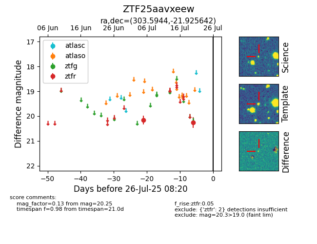

Target ZTF25aavxeew at 2025-07-26 08:20, see:
FINK: fink-portal.org/ZTF25aavxeew
Lasair: lasair-ztf.lsst.ac.uk/objects/ZTF25aavxeew
ALeRCE: alerce.online/object/ZTF25aavxeew
alt names
ZTF25aavxeew (ztf,fink)
coordinates:
equatorial (ra, dec) = (303.5944,-21.92564)
galactic (l, b) = (21.0487,-27.55310)
photometry
last ztfr=20.25
2 ztfr detections
